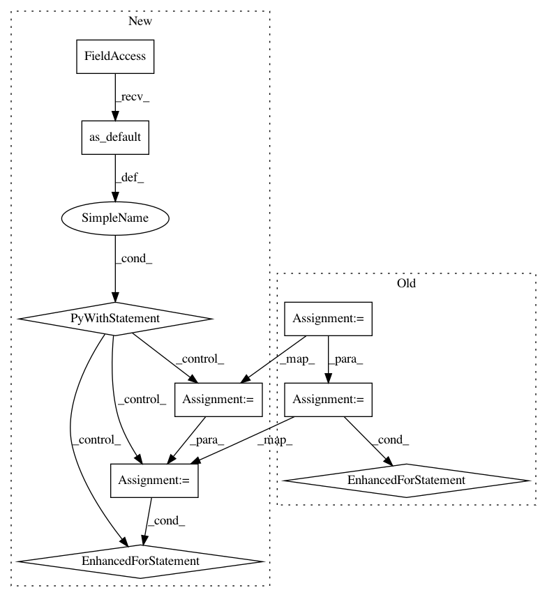

8d12411ea661a8616de84c705b575dbd9bac921a,deepplantphenomics/deepplantpheno.py,DPPModel,compute_full_test_accuracy,#DPPModel#,459
Before Change
def compute_full_test_accuracy(self):
Returns the network"s mean classification (top-1) or regression (L2) accuracy on the entire training set.
num_test = self.__total_raw_samples - self.__total_training_samples
num_batches = int(num_test/self.__batch_size)
if num_batches == 0:
warnings.warn("Less than a batch of testing data")
exit()
sum = 0.0
for i in range(num_batches):
x_test, y_test = tf.train.batch([self.__test_images, self.__test_labels],
batch_size=self.__batch_size,
num_threads=self.__num_threads)
x_test = tf.reshape(x_test, shape=[-1, self.__image_height, self.__image_width, self.__image_depth])
x_test_predicted = self.forward_pass(x_test, deterministic=True)
if self.__problem_type == definitions.ProblemType.CLASSIFICATION:
test_class_predictions = tf.argmax(tf.nn.softmax(x_test_predicted), 1)
test_correct_predictions = tf.equal(test_class_predictions, tf.argmax(y_test, 1))
test_acc = tf.reduce_mean(tf.cast(test_correct_predictions, tf.float32))
sum = sum + test_acc
elif self.__problem_type == definitions.ProblemType.REGRESSION:
y_test = loaders.label_string_to_tensor(y_test, self.__batch_size, self.__num_regression_outputs)
test_loss = self.__batch_mean_l2_loss(tf.sub(x_test_predicted, y_test))
sum = sum + test_loss
return sum / num_batches
def shut_down(self):
Stop all queues and end session. The model cannot be used anymore after a shut down is completed.
After Change
def compute_full_test_accuracy(self):
Returns the network"s mean classification (top-1) or regression (L2) accuracy on the entire training set.
with self.__graph.as_default():
num_test = self.__total_raw_samples - self.__total_training_samples
num_batches = int(num_test/self.__batch_size)
if num_batches == 0:
warnings.warn("Less than a batch of testing data")
exit()
sum = 0.0
for i in range(num_batches):
x_test, y_test = tf.train.batch([self.__test_images, self.__test_labels],
batch_size=self.__batch_size,
num_threads=self.__num_threads)
x_test = tf.reshape(x_test, shape=[-1, self.__image_height, self.__image_width, self.__image_depth])
x_test_predicted = self.forward_pass(x_test, deterministic=True)
if self.__problem_type == definitions.ProblemType.CLASSIFICATION:
test_class_predictions = tf.argmax(tf.nn.softmax(x_test_predicted), 1)
test_correct_predictions = tf.equal(test_class_predictions, tf.argmax(y_test, 1))
test_acc = tf.reduce_mean(tf.cast(test_correct_predictions, tf.float32))
sum = sum + test_acc
elif self.__problem_type == definitions.ProblemType.REGRESSION:
y_test = loaders.label_string_to_tensor(y_test, self.__batch_size, self.__num_regression_outputs)
test_loss = self.__batch_mean_l2_loss(tf.sub(x_test_predicted, y_test))
sum = sum + test_loss
return sum / num_batches
def shut_down(self):
Stop all queues and end session. The model cannot be used anymore after a shut down is completed.
In pattern: SUPERPATTERN
Frequency: 3
Non-data size: 9
Instances
Project Name: p2irc/deepplantphenomics
Commit Name: 8d12411ea661a8616de84c705b575dbd9bac921a
Time: 2017-03-03
Author: jubbens@gmail.com
File Name: deepplantphenomics/deepplantpheno.py
Class Name: DPPModel
Method Name: compute_full_test_accuracy
Project Name: dpressel/mead-baseline
Commit Name: 97c3dff645495d9c1c7bc18641861bb95637c1ba
Time: 2019-03-18
Author: dpressel@gmail.com
File Name: python/baseline/tf/classify/model.py
Class Name: ClassifierModelBase
Method Name: load
Project Name: dpressel/mead-baseline
Commit Name: 97c3dff645495d9c1c7bc18641861bb95637c1ba
Time: 2019-03-18
Author: dpressel@gmail.com
File Name: python/baseline/tf/lm/model.py
Class Name: LanguageModelBase
Method Name: load